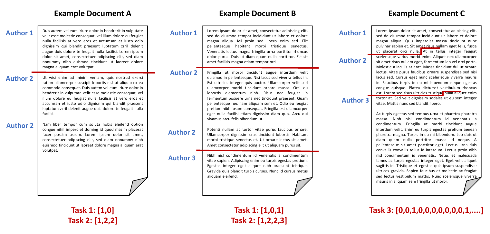

Style Change Detection 2022
Synopsis
- Task: Given a document, determine the number of authors and at which positions the author changes.
- Input: StackExchange questions and answers, combined into documents [data]
- Output: Where does authorship change on the paragraph and sentence level [validator]
- Evaluation: F1 [code]
- Submission: Deployment on TIRA
Task
The goal of the style change detection task is to identify text positions within a given multi-author document at which the author switches. Hence, a fundamental question is the following: If multiple authors have written a text together, can we find evidence for this fact; i.e., do we have a means to detect variations in the writing style? Answering this question belongs to the most difficult and most interesting challenges in author identification: Style change detection is the only means to detect plagiarism in a document if no comparison texts are given; likewise, style change detection can help to uncover gift authorships, to verify a claimed authorship, or to develop new technology for writing support.
Previous editions of the Style Change Detection task aim at e.g., detecting whether a document is single- or multi-authored (2018), the actual number of authors within a document (2019), whether there was a style change between two consecutive paragraphs (2020, 2021) and where the actual style changes were located (2021). Based on the progress made towards this goal in previous years, we again extend the set of challenges to likewise entice novices and experts:
Given a document, we ask participants to solve the following three tasks:
- [Task1] Style Change Basic: for a text written by two authors that contains a single style change only, find the position of this change (i.e., cut the text into the two authors’ texts on the paragraph-level),
- [Task2] Style Change Advanced: for a text written by two or more authors, find all positions of writing style change (i.e., assign all paragraphs of the text uniquely to some author out of the number of authors assumed for the multi-author document)
- [Task3] Style Change Real-World: for a text written by two or more authors, find all positions of writing style change, where style changes now not only occur between paragraphs, but at the sentence level.
All documents are provided in English and may contain an arbitrary number of style changes, resulting from at most five different authors.
The following figure illustrates some possible scenarios and the expected output for the tasks:
Data [download]
To develop and then test your algorithms, three datasets including ground truth information are provided (dataset1 for task 1, dataset2 for task 2, and dataset3 for task 3).
Each dataset is split into three parts:
- training set: Contains 70% of the whole dataset and includes ground truth data. Use this set to develop and train your models.
- validation set: Contains 15% of the whole dataset and includes ground truth data. Use this set to evaluate and optimize your models.
- test set: Contains 15% of the whole dataset, no ground truth data is given. This set is used for evaluation.
You are free to use additional external data for training your models. However, we ask you to make the additional data utilized freely available under a suitable license.
Input Format
The datasets are based on user posts from various sites of the StackExchange network, covering different topics. We refer to each input problem (i.e., the document for which to detect style changes) by an ID, which is subsequently also used to identify the submitted solution to this input problem. We provide one folder for train, validation, and test data for each dataset, respectively.
For each problem instance X (i.e., each input document), two files are provided:
problem-X.txtcontains the actual text, where paragraphs are denoted by\nfor tasks 1 and 2. For task 3, we provide one sentence per paragraph (again, split by\n).truth-problem-X.jsoncontains the ground truth, i.e., the correct solution in JSON format. An example file is listed in the following (note that we list keys for the three tasks here):{ "authors": NUMBER_OF_AUTHORS, "site": SOURCE_SITE, "changes": RESULT_ARRAY_TASK1 or RESULT_ARRAY_TASK3, "paragraph-authors": RESULT_ARRAY_TASK2 }The result for task 1 (key "changes") is represented as an array, holding a binary for each pair of consecutive paragraphs within the document (0 if there was no style change, 1 if there was a style change). For task 2 (key "paragraph-authors"), the result is the order of authors contained in the document (e.g.,
[1, 2, 1]for a two-author document), where the first author is "1", the second author appearing in the document is referred to as "2", etc. Furthermore, we provide the total number of authors and the Stackoverflow site the texts were extracted from (i.e., topic). The result for task 3 (key "changes") is similarly structured as the results array for task 1. However, for task 3, thechangesarray holds a binary for each pair of consecutive sentences and they may be multiple style changes in the document.An example of a multi-author document with a style change between the third and fourth paragraph (or sentence for task 3) could be described as follows (we only list the relevant key/value pairs here):
{ "changes": [0,0,1,...], "paragraph-authors": [1,1,1,2,...] }
Output Format [validator]
To evaluate the solutions for the tasks, the results have to be stored in a single file for each of the input documents and each of the datasets. Please note that we require a solution file to be generated for each input problem for each dataset. The data structure during the evaluation phase will be similar to that in the training phase, with the exception that the ground truth files are missing.
For each given problem problem-X.txt, your software should output the missing solution file
solution-problem-X.json, containing a JSON object holding the solution to the respective
task. The solution for tasks 1 and 3 is an array containing a binary value for each pair of consecutive paragraphs (task
1) or sentences (task 3). For task 2, the solution is an array containing the order of authors contained in the document
(as in the truth files).
An example solution file for tasks 1 and 3 is featured in the following (note again that for task 1, changes are captured on the paragraph level, whereas for task 3, changes are captured on the sentence level):
{
"changes": [0,0,1,0,0,...]
}{
"paragraph-authors": [1,1,2,2,3,2,...]
}Evaluation [code]
Submissions are evaluated by the F1-score measure for each document. The three tasks are evaluated independently based on the obtained evaluation scores. We compute the macro-averaged F1-score value across all documents. To add a further, secondary perspective on the results obtained, we evaluate two further measures for Task 2: Diarization Error Rate (DER) and Jaccard Error Rate (JER). These measures essentially capture the fraction of text that is not correctly attributed to an author and are borrowed from the field of text transcription.
We provide you with a script to compute those measures based on the produced output-files [evaluator and tests].
Submission
Once you finish tuning your approach on the validation set, your software will be tested on the test set. During the competition, the test sets will not be released publicly. Instead, we ask you to submit your software for evaluation at our site as follows.
We ask you to prepare your software so that it can be executed via command line calls. The command shall take as input (i) an absolute path to the directory of the test corpora and (ii) an absolute path to an empty output directory:
mySoftware -i INPUT-DIRECTORY -o OUTPUT-DIRECTORYWithin INPUT-DIRECTORY, you will find three folders (dataset1,
dataset2, dataset3) holding the sets of problem instances (i.e., problem-[id].txt
files) for each of the three datasets, respectively. For each problem instance you should produce the solution file
solution-problem-[id].json in the respective subfolder (dataset1, dataset2,
dataset3) of OUTPUT-DIRECTORY. For instance, you read INPUT-DIRECTORY/dataset1/problem-12.txt, process it, and write your results to OUTPUT-DIRECTORY/dataset1/solution-problem-12.json.
In general, this task follows PAN's software submission strategy described here.
Note: By submitting your software you retain full copyrights. You agree to grant us usage rights only for the PAN competition. We agree not to share your software with a third party or use it for other purposes than the PAN competition.
Related Work
- Style Change Detection, PAN@CLEF'21
- Style Change Detection, PAN@CLEF'20
- Style Change Detection, PAN@CLEF'19
- Style Change Detection, PAN@CLEF'18
- Style Breach Detection, PAN@CLEF'17
- PAN@CLEF'16 (Clustering by Authorship Within and Across Documents and Author Diarization section)
- J. Cardoso and R. Sousa. Measuring the performance of ordinal classification. International Journal of Pattern Recognition and Artificial Intelligence 25.08, pp. 1173-1195, 2011
- Benno Stein, Nedim Lipka and Peter Prettenhofer. Intrinsic Plagiarism Analysis. In Language Resources and Evaluation, Volume 45, Issue 1, pages 63-82, 2011.
- Efstathios Stamatatos. A Survey of Modern Authorship Attribution Methods. Journal of the American Society for Information Science and Technology, Volume 60, Issue 3, pages 538-556, March 2009.